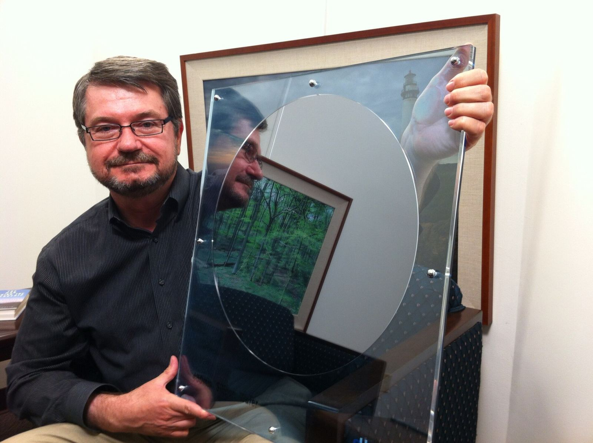

谷歌推出 TPU 8tx 与 TPU 8i Max：第八代组合一年内扩至四套系统；8tx 面向机密推理，8i Max 将两颗 8i 封装在同一封装上，算力、SRAM 与 HBM 带宽均为 8i 的两倍


谷歌 AI 与基础设施高级副总裁兼首席技术专家 Amin Vahdat 于 2026 年 11 月 9 日发文，宣布推出 TPU 8tx 与 TPU 8i Max，使第八代 TPU 组合在一年内扩大到四套系统。这四套系统是：面向大规模训练的 TPU 8t、面向实时推理的 TPU 8i、面向安全与机密推理的新系统 TPU 8tx，以及面向超大上下文窗口、并被称作每机架算力密度最高的 TPU 8i Max。Vahdat 写道，这是公司首次在同一年推出四套 TPU 系统。文中称，TPU 现有近 100 家外部客户，包括前沿实验室、交易公司、零售商与大学等。
这是公司首次在同一年推出四套 TPU 系统：8t 负责规模化训练，8i 负责低延迟推理，8tx 负责机密计算，8i Max 负责超大上下文与最高机架算力密度。
关于「新芯片」与「新系统」的区别，文章解释：新芯片需在硅晶圆上布置晶体管，受物理与漫长制造周期约束；新系统则是围绕芯片组织计算、网络与存储，包括封装方式，以便更快响应客户与研究需求。TPU 8tx 基于与 TPU 8t 相同的硅，并搭配第 5 代 AMD EPYC CPU 主机，把安全做进硬件层，使敏感数据与模型权重在使用中仍保持受保护与隔离；它还采用为实时推理打造的低延迟 Boardfly 网络，称相对 TPU 8t 延迟可降低至多约两倍，性能损失接近于零。该系统也适合小规模训练，使团队能在同一套系统上用私有数据微调、把大模型蒸馏成小模型，并通过强化学习训练代理，而无需在不同集群间迁移敏感数据。
TPU 8i Max 针对内存墙：把两颗低延迟 TPU 8i 芯片组合到同一封装上，算力、SRAM 与 HBM 带宽均为 TPU 8i 的两倍，并在既有机架占地内放入两倍硅，以提高单位面积与单位功耗的算力。文章把四套系统的分工概括为：8t 负责规模化训练，8i 负责低延迟推理，8tx 负责机密计算，8i Max 负责超大上下文与最高机架算力密度。文中还提到近期对 PyTorch 的支持（包括开源 TorchTPU）、TPU Sync、Cloud Pathways 与 GKE 动态切片等软件更新。官方并预告当日太平洋时间上午 9 点的直播。
摘记，不是官方媒体。客户数量、延迟与带宽倍数等数据均出自谷歌官方博文，未独立实测。供应范围与软件预览状态以原文为准。